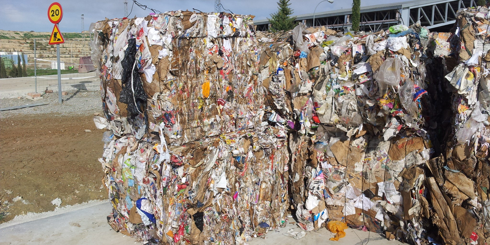

LA NUEVA HOJA
Somos una empresa mexicana comprometida con el medio ambiente y la innovación sostenible.
Nos dedicamos a recolectar, procesar y transformar hojas secas en papel reciclado de alta calidad,
reduciendo el impacto ambiental y promoviendo un modelo de producción responsable.
Nacimos con la misión de demostrar que los residuos orgánicos no son basura,
sino una oportunidad para crear productos útiles y ecológicos.
A través de procesos limpios y eficientes, aprovechamos uno de los desechos más abundantes en México
para convertirlo en un recurso renovable que disminuye la necesidad de talar árboles y reduce la huella ecológica del papel tradicional.
